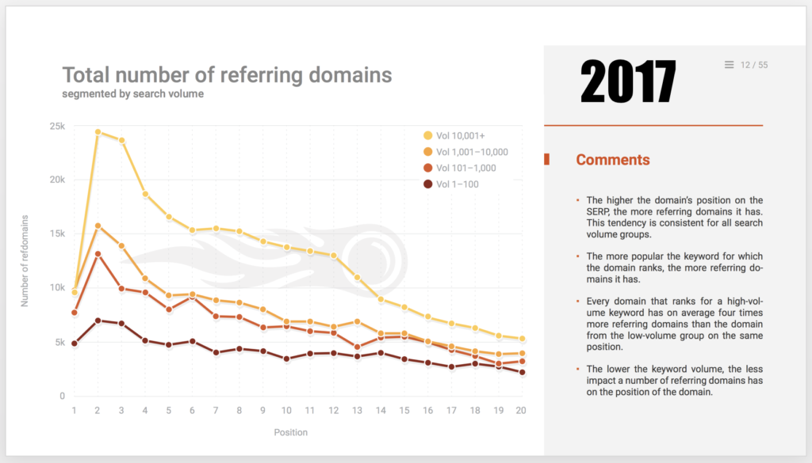
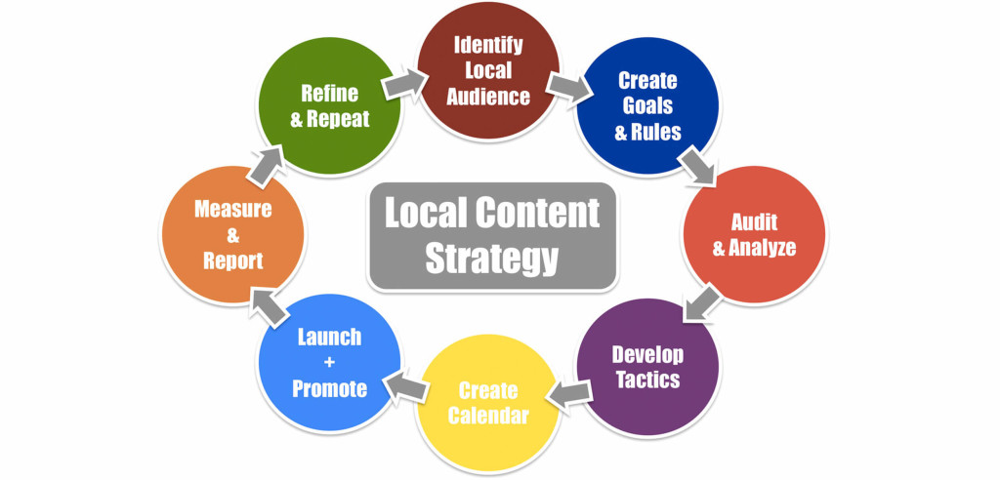

The Importance Of Link Building Isn’t Going Away Any Time Soon.

Just look at the most recent large volume study from Semrush showing the google ranking position vs the total number of referring domains.
Over the years similar studies have been done by Moz, aHrefs, and Backlinko. Beyond that, I have built links to specific pages and have seen those pages rise in the serps with my very own eyes. So I am a believer even if correlation doesn’t equal causation.
You Need To Be Acquiring Links For Local Businesses.
The local pack algorithm is tied to the organic algorithm which makes Link Building one of the few tactics that can help you rank higher organically, and in maps. While many people focus only on citations, reviews, or content, you can get a double benefit with links pointing to your local landing page.
What’s The Best Way To Earn & Acquire Local Links?
From a ton of trials, tests, and experiments, I have come to the conclusion that you need to have a solid local content strategy to even begin worrying about links. Once your content strategy is rolling, when you develop tactics you with then be able to match your content with the type of outreach, asking, begging, and stealing it takes to get local links.

Here’s A Slidedeck On Local Link Building For You.
Now for the Ultimate list of Local Link Building Tactics. Please Enjoy.
Alumni Links
Alumni Links
1 Hour
50 – 100 +
Medium – High Authority
Are you a success story? Your alma mater may have a place in their website to feature something like that. Or, they might have an alumni directory where you can gain a .edu link to your business. Make those student loans worth a little more by leveraging your alma mater for links.
Pro tip: If your institution does not allow links to commercial sites or businesses, then go for a link to one of your high authority social profiles or citations.
Brand Mentions
Brand Mentions
1 Hour
50 – 2,000 +
High Authority
One of the easiest ways to get links from news sites is to find instances where they have mentioned you or your brand in an article and ask for a link.
Reach out to the writer or editor and ask them to make the minor adjustment of linking the text mentioning your brand to your website.
Finding a writer or editor’s email address can be difficult depending on the site. There are some tools out there like hunter.io that aim to help make it less time-intensive. But if you’re going the free route, manual Google searches can also yield some good results. Below are some good starting points:
[AUTHOR-NAME] site:[PUBLICATION-URL] [AUTHOR-NAME] [PUBLICATION-NAME] site:twitter.comIn your outreach email be careful throwing a word like “attribution” around with reporters/editors, and remember they do not have to link to you, even if it’s a direct quote.
Moz’s Fresh Web Explorer and Google News are good places to start looking for brand mentions to chase.
Build A Local Interest Website
Build A Local Interest Website
4 Weeks – Indefinitely
2,000 – 10,000 +
Low – Medium Authority
This can be anything from small website up to a huge project. You can do something like this: http://thisisboise.com if you want to try to cover everything going on in your area but you’ll need a full-time staff to accomplish it if you are located in a major metro. Instead, a more manageable effort is to narrow the focus in relation to the size of your town. The smaller the town, the more you may be able to cover as there will be less going on. The larger the city, the more you may need to narrow the focus (depending on your budget). This could be anything from a hyperlocal news site, sports coverage nightlife, etc. If you make a good resource, you should gain natural links & traffic from your area once people begin to find it (if you build it, they will come). Localized Facebook ads can help speed awareness up.
Build A Tool
Build A Tool
8 – 12 Weeks +
2,000 – 5,000
Low – Medium Authority
Come up with an idea for a tool that can do something cool or display interesting data in a visually appealing format. This could be anything from a traffic tool that shows historical accident data or a tool that displays information on what pests are most problematic at different times of the year. Then outreach to audiences that would find this type of information useful. You should even be able to gain some wiki links. The downside is, if you don’t have a programmer on staff, this can get expensive very quickly as there will be a considerable amount of time & effort that goes into the programming to make it work.
Competitive Intelligence Link Building
Competitive Intelligence Link Building
2 Hours
1,000 – 2,000 +
Low – Medium Authority
Analyzing competitor backlinks can be a great way to boost your own site’s authority. The key is to find the good quality, high authority links and replicate those. It’s best to avoid replicating any spammy links.
There are a number of tools available to generate a list of competitor backlinks. We’ve found that the two most comprehensive tools are cognitiveSEO and Ahrefs. With these tools, you will be able to input a competitor’s website URL and generate a list of backlinks. Both tools will also include some kind of authority metric (either DomainRank (DR) or TrustFlow(TF)) to help you identify good quality links quicker.
Sorting these high to low can help you weed out lower quality links. You can export the backlink list to a CSV and use Excel to accomplish this.
While authority metrics are valuable, it’s still important to do a manual analysis of individual backlinks and make sure you’re comfortable with getting a link from that site. Be cautious of comment links, forum links, and spammy directories. Ideally, you should only build links from sites related to your industry. Also, remember that branded anchor texts are safest.
Check out our post on competitor link building for a much more detailed plan on how to capitalize on this tactic.
E-Book
E-Book
4 – 12 Weeks +
1,000 – 3,000 +
Medium – High Authority
Ebooks are a great way to build authority on a topic, pick up a few links and/or create a newsletter/mailing list. Often, companies already have enough content they can utilize for this to get a good jump start without even having to write. Then it’s just a matter of filling out the missing chapters.
Here are 8 easy steps to utilizing an ebook on your website:
- Build out a strategy around a topic that information can be provided to alleviate a pain point for a specific group of people (e.g. chiropractors wanting to gain more clients who’ve been injured in an auto accident, people who’ve been injured in a certain type of accident, etc.)
- Outline the chapters for the book & how much budget you want to allocate to the content. The key here is to plan each chapter out as a stand-alone blog post that can later be compiled into the ebook. This way, you’re expanding your website content and getting extra benefit out of that content after it’s already in use. (Content could also be compiled from onsite and offsite blogs, etc.).
- Schedule out writing the content for whatever length of time necessary.
- Start writing & posting content
- Once all content is complete, design the cover & Table of Contents & compile it.
- It’s a good idea to attribute a call tracking number to all CTA’s in the book so you will know if any direct leads are generated by it.
- There’s a number of sites that will list free ebooks (such as https://openlibrary.org) as well as organizations that are focused on the topic of your book. Go find them & let ’em know about your resource…and/or, list it on Amazon & charge a small fee for it. (Bonus: you can multiple get high DA, dofollow links in your author profile through author updates. E.g. http://www.amazon.com/Daniel-L.-Buckfire/e/B0042AH9U8/ref=dp_byline_cont_book_1)
- Do a press release and/or blog posts covering the release of the resource.
Rinse & Repeat.
You can use the resource as a way to capture potential leads by giving it away only after the user has given you their name & email and opted into a mailing list or newsletter. You can then nurture that lead & build rapport until they convert into a client.
Ego Bait Local Expert Contributor Outreach
Ego Bait Local Expert Contributor Outreach
4 – 6 Weeks
2,000 – 5,000
High Authority
This is where you identify a subject related to your industry in some way which also has overlap with another field. A couple examples of this would be: a marketing company talking about image usage & copyright laws asking for IP lawyers to contribute insights or a personal injury lawyer talking about dealing with grief after losing a loved one & reaching out to grief counselors for insight. You then reach out to local experts on this subject and ask them for their expert insight into specific or broad questions about the topic. This should bring clear value to your post as it has another expert to bring additional authority and they will often be grateful to contribute. Of course, this is because you will typically link back to their site & give them mention within the post next to their contribution. However, they may be glad to make note of it on their own site as another mention of where they’ve been quoted, etc. & will more than likely at least share it with their social audiences. So, at the very least, you’ll probably end up with some fantastic expert written content on related subjects for your own site as well as social media references/links to the post in new circles as well as the occasional traditional link.
You can always reach out to other groups who’d likely be interested in your post (especially with the added expert insights) to further gain attention & links with the exceptionally authoritative content with ample expert insight.
Facebook Ads
Facebook Ads
3 – 4 Weeks
1,000
Low – Medium Authority
Many times companies create awesome content but struggle to get it in front of their audience. This is a great way to target your market. Facebook ads let you zone in on all those people you’re wanting to notice you. This is a great way to build brand awareness and boost Facebook likes, not to mention your blog posts linger around on Facebook even after you stop paying for the ads. When they gain ground like this it’s more likely they will get a link mention. For example http://www.pointepestcontrol.net/10-crazy-bug-bites-that-will-make-your-skin-crawl/
We posted the above blog in May, this month we still had 162 views of that page.
As mentioned above, this is a great way to build brand awareness and traffic to your site, but link earning isn’t guaranteed, thus being low-medium quality for link building tactic.
Facebook Like Drive
Facebook Like Drive
10 Hours
1,000
Low – Medium Authority
Facebook Like Drives are a great way to get a backlink from a local charity with high authority. Find a local (relevant) charity and the idea is to pledge money for every “Like” your Facebook page gets within an allotted time. It’s best to put a maximum amount to protect yourself like “up to $500.” You can run the campaign for 30 days and promote it as much as you like in order to get more Likes. Be sure to tag the charity’s Facebook page when you announce it on your own page to draw the attention of the charity organization’s audience. The final piece of the puzzle is to get a link from the charity organizations site. You can do this by writing an announcement for their blog or simply asking them to link to it on something like a “Media” page.
Free Resources & Reverse Image Links
Free Resources & Reverse Image Links
4 – 8 Weeks
500 – 1,000
Low – Medium Authority
Having good website imagery is a need common to every industry. Industry related images can be uploaded to places like Wikimedia commons & other places that users can download images for free. Just make sure to ask for attribution as a requirement when you upload.
After you’ve uploaded some images & given a little time for these to be found on the sites you’ve uploaded to, do Google image searches to find where your images are being used & ask for attribution through a link if they haven’t yet given it. Or outreach to places that would be likely to use the media (schools & non-competing companies).
The great thing about them being picked up naturally is you have the right to demand the attribution you set at the free image sites but if the site isn’t something you even want linking back, you can just leave it alone. (Note: asking nicely before “demanding” is recommended & usually adequate to get the job done.)
Google Consumer Insights Surveys
Google Consumer Insights Surveys
3 – 4 Weeks
3,000 – 5,000
Medium Authority
Being able to collect and present trustworthy information is critical. Consumer Insights allows anyone to collect data on a local or national level at a pretty reasonable price. Turnaround is 1-2 weeks and with the right setup, you’ll end up with trustworthy data with a high confidence interval. Did I mention newsworthiness? Your survey responses can be made into a visualization, press release or glowing linkable asset like an interactive map or display to gain links. Typically a single question survey runs $1500-2000 depending on how many responses you need. Price goes up the more questions you ask.
Consumer Insights URL: https://www.google.com/analytics/surveys/#?modal_active=none
Google Custom Maps
Google Custom Maps
1 Hour
50 – 250
Low – Medium Authority
Google has their custom map tool that allows anyone to create maps of any local landmarks they want. This can come in handy for local communities.
How can you take advantage of this tool? Put together a custom map of things in your community. It can be anything like hospital locations, schools, parks, libraries etc.
It can also be very focused on specific topics like animals for example animal hospitals, vets, pet-friendly stores, pet-friendly parks, or greenbelts. You could also do a map for local events like concerts, sporting event, races, art exhibits etc.
Once the map is created post it on a page and outreach to local sites for people to link to it. People or sites interested in the subject of the map would be a good starting place.
Here is a link to the Google Custom Maps tool. https://www.google.com/maps/d/u/0/?hl=en_US&app=mp
Industry Specific Local Directories
Industry Specific Local Directories
1 Week
1,500 – 3,000
Low – High Authority
Local and niche citations are both important as they let Google know what you do and where you’re located. Citations are a key component of the ranking algorithm, so you need to make sure when adding new local/niche citations that your NAP information is exactly as is it is on your Google+ listing.
Local citations work in a way that they can help Google locate your business based on the number of local citations or mentions that are showing the correct NAP information. The more local links Google sees, the more it’s going to associate your business and its services with that specific location. The best way I found doing this is searching for the town + “business directory” or “business listings” or “business directories” or “free business listings”. You can also put the city name at the end to see if you get different results. I also do the same type of search for the county of that city and also all of the cities in that county. That way I know I’m hitting up all local directories to be listed in.
Niche citations are a bit more important as those sites tend to have more medium-high authoritative sites (Avvo, SuperLawyers, HG), they let search engines like Google know what types of services you offer and finally, they can show up either in the 1st Organic slot or somewhere on page 1 of Google search results.
Job Posting Websites
Job Posting Websites
2 – 6 Weeks
Cost of job posting sites and new hires
Low – Medium Authority
At some point it’s likely you are going to need to hire someone for longer than an internship & you’re going to need to post the job listing to find applicants. Creating a page on your website listing the job requirements is a great way to get links back in your job postings. Linking back to the about page is also beneficial for applicants.
There’s a number of job posting sites out there like Monster, Indeed, SimplyHired, Craigslist, CareerBuilder, etc. Many of which you will gain a link from in the job post (if desired). You may just decide you want to keep a job post up indefinitely in case the perfect candidate comes around (which will also maintain the link). Beyond the big job posting sites, often you can find local-centric sites that may have pages dedicated to local events, jobs, etc. which will allow for a post & also gain you a link.
Local Blog Promotion
Local Blog Promotion
2 Hours
50 – 200
Medium Authority
Find local centers of influence like Subreddits, city pages, discussion forums, etc where your target audience is likely to be and promote your best blog posts there. The more hyper-local and relevant the content is, the more traffic you’ll draw to your site. For example, a blog post about 10 types of New Jersey shade trees that can save you money might pick up some good traction on the New Jersey subreddit. If it the information isn’t useful, you’re wasting time. If you come across as advertorial, you’ll be slashed by the moderator and called out by users. Tread carefully.
Local Crowdsourcing Posts
Local Crowdsourcing Posts
1 – 2 Weeks
50 – 200 +
Medium Authority
Every community has local influencers, groups of people that are well known, have specific opinions on important topics, and have a certain pull in community decisions. Getting these people to share their opinions and ideas is usually very easy and straightforward.
Get a group of local influencers together, ask them their opinions on something happening in the community. Put together their responses in a well-written piece on your site and ask them to share and post your content to their social channels. This is something that could easily be done on a regular basis.
Local Discounts
Local Discounts
8 – 12 Weeks +
200 – 1,000
Medium – High Authority
Offer a discount on rates or services to a specific group of people. Student & military discounts are common but you can get creative & offer discounts to other groups as well. One way to find places that are already listing discounts is by doing searches such as City inurl:employee, discount. So you might look for “Austin inurl:employee, discount” or “Austin inurl:discounts, list” & find opportunities like these:
- http://www.apsu.edu/sga/student-discounts
- http://www.austinasianchamber.org/member-discounts
- http://www.austinisd.org/edquality/employee-recognition/discounts
- http://www.collegepackinglist.com/college-discounts-cheatsheet.html
where you can list your business as a provider of these discounts & gain a link back to your site.
Local Events
Local Events
4 – 8 Weeks
50 – 5,000 +
Medium – High Authority
Hosting local events is a great way to build your brand. Anything from workshops to speaking events. These are good ways to get people to know more about you in the community and a great opportunity to get links back to your site.
Getting links from local events is beneficial because the links are:
- Geo-Specific
- Somewhat easily attainable
- Can include NAP information
- Diverse
Moz did a great write-up of exactly how to execute local events. Check out their guide here: https://moz.com/blog/the-complete-guide-to-link-building-with-local-events
Local Guest Blog Posting (Mom Blogz 4 Dayyyyys)
Local Guest Blog Posting (Mom Blogz 4 Dayyyyys)
2 – 6 Weeks
1,000 – 5,000 +
Medium – High Authority
In some areas, this is more difficult than others. However, fairly populated cities generally have a good population of bloggers. Some of the best bloggers to work with are mom bloggers. The challenge becomes creating something that is valuable enough to the blogger and their readership that they’d be willing to share it. This is where you have to become a little clever. Think of an overlap between your type of work and their readership/blog topic.
Here are some examples:
- If you are an attorney that deals with serious head injuries and you are reaching out to Mom bloggers, you could offer to write an article on how to make homes safer for children.
- Maybe you are a pest control company in Boise, Idaho reaching out to local real estate companies. You can offer to write a piece of content on ways homeowners can identify pest problems in a home they are considering buying or ways they can help prevent pests in their current home.
- A pest control company can reach out to local pet bloggers about common pest threats in their area
- A bicycle accident lawyer can reach out to local mom bloggers about great family-friendly bike trails in their state
- A plumber can reach out to mom bloggers and tell some stories about the craziest things they’ve found in the pipes that were probably placed there by children
- A divorce lawyer could reach out to mom bloggers and talk about ways to help your children during a divorce
Local Guide
Local Guide
4 – 6 Weeks
500 – 1,000
Low – Medium Authority
Every town has things to do. How much will depend on size but there’s always something that can be compiled into a local guide. If your area is big enough, you may need to focus on a certain type of event for your guide. Such as outdoor concerts, all the family Christmas events, etc. This will be more of a local traffic & brand awareness play than links but if you do a good job, you may land a few links as well. Once you’ve compiled a nice resource, it may attract links naturally but you can also reach out to the places hosting the events you are referencing & ask for a link to your resource which you’ve included them in. Pair this with a little bit of localized paid Facebook advertising & you’ll have some great traffic & social signals coming to your site.
Example:http://www.buildidaho.com/home/boise_idaho/boise_christmas_and_holiday_activities/
Local Infographic
Local Infographic
2 – 4 Weeks
2,000 – 3,000 +
Medium Authority
When your infographic is finished, start finding targets. They can either be local or national depending on the nature of the information in the infographic. You can seek out centers of influence in social media channels, relevant personal blogs or organizations that might find an interest in the information. For example, an infographic about the cheapest bicycle rental in a city could be interesting to bicycle rental businesses, blogs about city life and/or biking, subscribers to the city Subreddit, various city organizations, etc. The most important part of an infographic campaign is how you plan to promote it or leverage it for links. The outreach strategy should help determine what the infographic is about, what specific information is presented and even how it’s designed.
Some additional things to try:
- Publish it on infographic submission sites.
- If it’s newsworthy, you can promote it via TheHoth Press (just make sure you nofollow the links).
- Write a post about the infographic and how it relates to another industry that you write about frequently, and publish it on a blog you already have a relationship with.
- Reach out to someone you’ve had success with before.
Infographic submission site: https://piktochart.com/blog/websites-submit-promote-your-infographic/
Local Internships
Local Internships
1 – 2 Weeks
1,000 – 3,000
High Authority
Wanting an Intern? Interested in possibly having an intern in the future if the right candidate applies? This is a great opportunity to get some high authority links from local universities. All you need to do is add an internship opportunity page to your website and start reaching out to local universities. The nice thing about this is that there are full-time employees in charge of getting information like internship opportunities into the hands of their students. So the response rate is generally excellent. However, many universities use software or databases to post their internship opportunities. This is not ideal. Generally, the only way to access that information is if you are a student. A better option would be to find if they have an external internship board of some kind. Several universities do. These are gold. You will have better luck contacting advisors from specific departments than a general university advisor. In less than 10 hours I was able to reach out to most large universities in the state/area and their different departments for my different internship opportunities.
(hint: the Communications departments are generally the most helpful)
Local Interviews
Local Interviews
4 – 5 Hours
50 – 500
Medium – High Authority
Every community has local famous, interesting or well-known people. People look up to them, talk about them, follow their social accounts and even gossip about them. This can be used to your advantage.
Work with people in the community that have local sites or local blogs that could use fresh content. Some of the local important people may even have sites and blogs of their own.
Interview these important community members. Do a write up of your interview and offer the content to other sites. You can produce the content and already have the link embedded so all they have to do is copy and paste.
Local Photographer Image Usage Outreach
Local Photographer Image Usage Outreach
2 – 4 Weeks
$1,500 – $2,500
Medium – High Authority
Finding local imagery on stock sites can be challenging. Instead, try finding local photographers with images you can use for your posts & ask for permission to use a local image with your content. When they’ve granted permission, use the image & once the post is live, let them know you’ve made the content/image live & given them whatever type of attribution they’ve asked for. Then ask them if they’d be willing to reference the post with their work as an example of their work being used somewhere on their site and also share the content with their social circles.
Local Scholarship
Local Scholarship
4 – 6 Weeks
2,000 – 4,000 +
Medium – High Authority
Sponsoring a local scholarship, when done correctly, can result in a significant amount of additional backlinks, including from valuable .edu sites.
The idea is to organize a scholarship opportunity specifically for local high schools or colleges with clear parameters and eligibility requirements. This is motivating for scholarship coordinators who want to see that it’s a unique opportunity and that their students have a good chance of earning some money.
To get started, you will need to determine how big of a scholarship you want to sponsor (bigger scholarships usually get more links), the selection criteria, deadlines, and a privacy policy.
After that, you will need to create an outreach list. You can use Wikipedia to identify a list of local schools in your area. From there, you can visit each individual school’s website and find contact information for high school counselors or college financial aid advisors. You can find more comprehensive tips on our scholarship study.
It’s best if you make the extra effort of identifying other local centers of influence who might find interest in the scholarship and share it with their audiences. This could be local bloggers, English teachers, student organizations and more.
Local Sponsorships
Local Sponsorships
1 Hour
100-2000+
Medium – High Authority
Do you sponsor a little league team, conference series, high school sports teams, charities, plays, races, etc? Most of these local organizations have a website and get news coverage leading to higher authority local websites. Instead of asking for a plaque that ends up on a dusty shelf, ask for a link instead.
You can also find local sponsorship opportunities by using custom searches like:
inurl:sponsors “City name”
intitle:sponsors “City name”
intext:sponsors “City name”
Microsites
Microsites
4 Weeks
1,000 – 3,000
Medium – High Authority
According to Moz, some of the most important factors in ranking are #6: Quantity of Inbound Links to Domain from Locally-Relevant Domains and #11: Quantity of Inbound Links to Domain from Industry-Relevant Domains. A way to perhaps get both of these types of signals or ranking factors working in your favor simultaneously might be to build a very narrowly-focused microsite.
For example, if you’re a pest control company in Minnesota, maybe you could consider creating a microsite all about Minnesota Mice Control. This website would be topically/industry relevant to pest control and locally relevant as well. The goal might not be to have the site perform as a stand-alone entity (although that would definitely be a plus) but it sure could be a nice referring domain to your overall website.
Another example might be of a personal injury lawyer creating a site just about medical malpractice in the state they are located or car accidents in their city.
Press Release To Local Stations – Writing Contest
Press Release To Local Stations – Writing Contest
2 – 4 Weeks
2,000 – 3,000
Medium Authority
Do you want to connect with local high schools and earn some authoritative .edu links? Writing contests provide you the opportunity to connect with the local community, earn valuable backlinks and increase brand awareness. Effective local outreach is key and it is important to promote the winning essay and award. Must create a page on your site explaining the writing contest (rules, eligibility, timeline, award, etc.).
Provide Testimonials
Provide Testimonials
8 – 12 Weeks +
200 – 1,000
Low – Medium Authority
Every business has other local businesses that they’ve done business with in the past. (That’s a lot of business for one sentence.) Examples of these companies are cleaner companies, construction companies, painters, contractors, grounds maintenance, etc. The idea here is to reach out to these companies & offer to give them a great testimonial in exchange for a link back to your site. The testimonial could be given to them to post on their site or you can even create a page on your own site with these testimonials. Then all they have to do is link to that page. This is a great way to establish rapport & goodwill with other local businesses (beyond just gaining a link). Who knows, they may even send new business your way to return the favor.
Quality: Free Wifi Directories
Quality: Free Wifi Directories
3 – 4 Hours
50 – 200 +
Medium Authority
Does your office already have wifi capabilities setup for your staff to use? Why not offer free wifi to others within range? Many sites already exist that list out businesses offering free wifi. They then link directly back to the businesses website.
Below is a quick list of sites you can already start utilizing:
Reverse Infographic
Reverse Infographic
4 – 8 Weeks
200 – 1,000
Low – Medium Authority
Find local infographics and turn them into non-image based content for indexing and outreach. Basically, reverse engineer the content into a text post, expand it and reach out to the places that linked to it with updated info. A simple search for “City + Infographics” will turn up quite a few good resources in major metros which can be converted into interesting blog posts. You may even want to combine them to create a more comprehensive resource.
For smaller areas, you’ll probably need to get more creative with your data sources. A simple image search for “city, state + data” will usually return a few data sources such as average home listing prices, weather & temperature. However, you should also be able to find demographical data on crime rates, transportation, average income levels, etc. There’s usually plenty of information (with a little research) to create a post from.
Social Bookmarks
Social Bookmarks
1 Week
25/link
Low Authority
The purpose of SBM links is to build Page Authority on pages with little to no PA to the vicinity of PA 13-20. These links are meant to supplement other link building and serve a specific purpose of increasing rankings for niche terms in low competition markets. Not to be used as a stand-alone strategy. Probably best to avoid building SBM links to the homepage, and to not overdo it site-wide. Getting social bookmark links is not a tough job. Once you have a list of social bookmarking sites you can go through each one and create an account. Once your account has been created, add a new page and fill out the appropriate information about your website like web page address, category, etc. Once the information is filled out and correct, add the new page and you are done. An example of a popular social bookmarking site is StumbleUpon.
Pro tip: Social bookmark links are designed to give a boost to brand new or internal pages with little to no authority. They should be used sparingly. There are definitely different levels of quality when it comes to social bookmarks and there is some risk involved. This shouldn’t be the only type of links you want to be acquiring. Pay attention to risk vs. reward when it comes to these and only have social bookmarks be a small percentage of or supplementation to a bigger overall link acquisition strategy.
Tiered Links To Existing Local Links
Tiered Links To Existing Local Links
1 – 3 Weeks
$100 – $1,000
Low Authority
The idea here is to further build up the authority of existing local links by gaining new links pointing toward them. This could be referencing other awesome posts where your site was mentioned, projects you’ve worked on or sponsorships, etc. & then linking to them in new works (such as guest blog posts, etc.). You could push this further & greyer with social bookmarks, etc.
Unstructured Citations
Unstructured Citations
1 – 3 Weeks
500 – 1,000 +
Low – Medium Authority
Unstructured Citations allow you to enforce the NAP of your client while receiving a link. These listings are usually quick to build and, are a great supplement to the main citation aggregators. There are several free directories that you can build and, of course, paid directories so adjust your budget accordingly.
Other things to consider:
- Use Searches such as; Camden, NJ Business Directory, Free Business Listings in Billings, MT.
- Search for Local Classified Ads
Example(s):
Wiki Links
Wiki Links
4 Weeks – Forever
200 +
Medium – High Authority
If you have peer-reviewed articles, reports or other credible documents on your site, there may be an opportunity to cite yourself on a high authority Wiki page. If it doesn’t add real value or provide more in-depth information to the page, it will most likely be removed by moderators.
You’ll want this:
{{cite web | url=URL |title=TITLE | publisher=PUBLISHER | date=PUBLISHING DATE | accessdate=ACCESS DATE}}